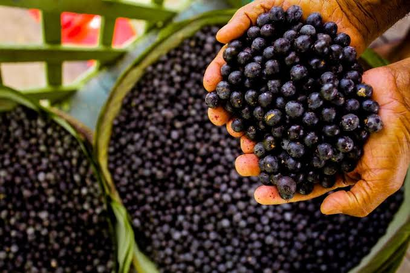

O açaí é um fruto típico da região Amazônica, originário da palmeira do açaizeiro.
Ele é consumido há séculos pelos povos indígenas e pelas comunidades ribeirinhas, sendo um alimento muito importante por fornecer energia e nutrientes.
Com o passar do tempo, o açaí ganhou popularidade em todo o Brasil e, posteriormente, em diversos países, tornando-se um dos produtos mais conhecidos da Amazônia.
Além de seu valor histórico e cultural, o açaí possui grande importância econômica, pois gera emprego e renda para milhares de famílias que trabalham na coleta, no cultivo e na comercialização do fruto.
Também é muito importante para a preservação da floresta, já que o manejo sustentável do açaizeiro incentiva a conservação da vegetação nativa.
Do ponto de vista nutricional, o açaí é rico em antioxidantes, fibras, vitaminas, minerais e gorduras saudáveis, contribuindo para uma alimentação equilibrada.
Por reunir tradição, benefícios para a saúde e relevância econômica e ambiental, o açaí é considerado um dos frutos mais importantes da biodiversidade brasileira e um símbolo da cultura amazônica.
